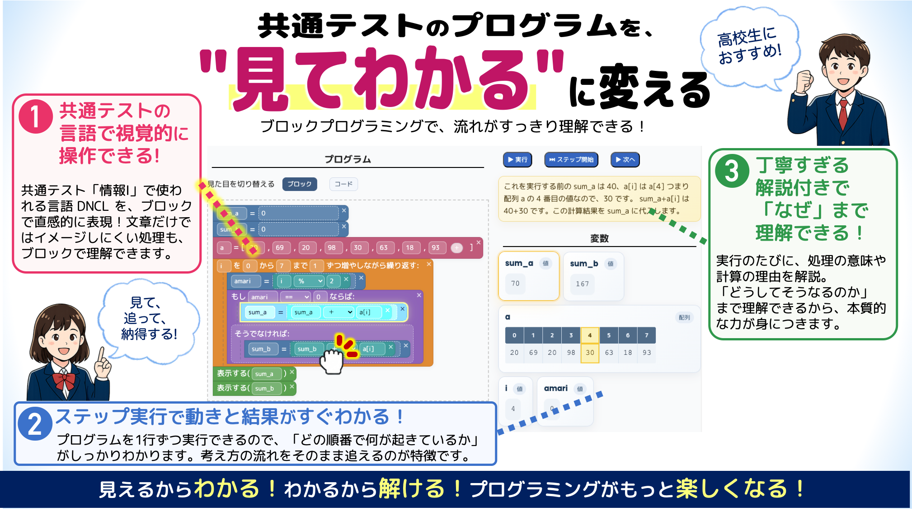

情報I プログラミングの解き方
共テプロトレ（共通テストプログラミングトレーニング）
高校「情報I」のプログラミングを、解説動画で理解して、その場で動かして練習できます。 変数と代入・条件分岐・繰り返し・配列を単元別に、共通テストのプログラム表記（DNCL）でそのまま演習。
無料・登録不要。スマホでもそのまま動きます。
情報I プログラミングを動画で理解する
「授業で急にプログラムが出てきて、何をしているのか分からない」という人は、まずこの1本から。 変数・演算子・条件分岐・繰り返しまで、ひととおり見わたせます。
単元別にくわしく（シリーズ）
単元別の解き方
情報Iのプログラミングは、この5つが分かればほとんど読めます。 要点を見てから、同じ単元の問題をそのまま解いてみてください。
練習問題を解く（全問）
穴埋めをブロックにはめて、そのまま実行。ステップ実行で、変数の中身がどう変わるかを1行ずつ確かめられます。
| 難易度 | タイトル | 内容 | 追加日 |
|---|
3ステップで使えます
- 1 動画で単元を理解する変数と代入、条件分岐、繰り返し。分からない単元の動画を1本見ます。
- 2 同じ単元の問題を解く選択肢をブロックにはめて、そのまま実行。答え合わせもその場でできます。
- 3 ステップ実行で確かめる1行ずつ動かして、変数の中身がどう変わるかを目で見て確認します。
共テプロトレの3つのメリット
